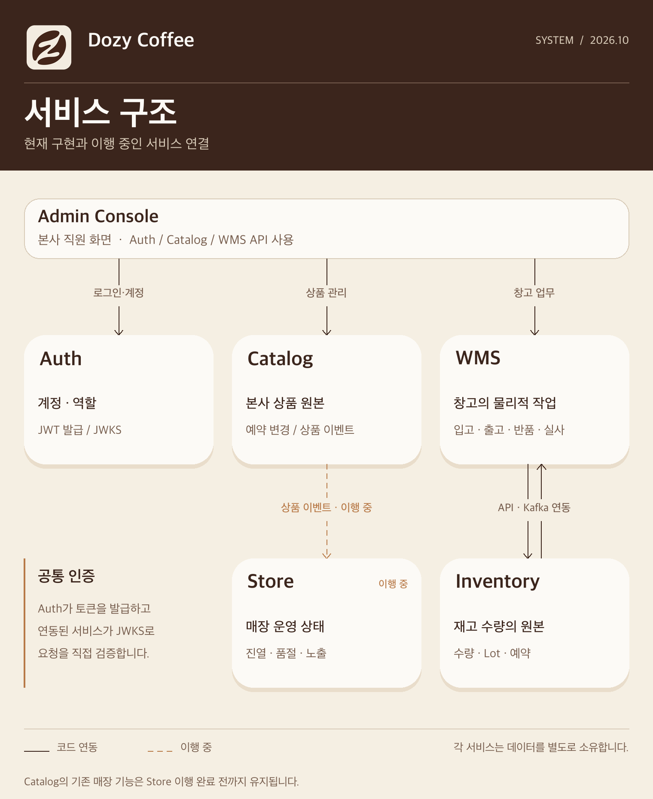

2인 사이드 프로젝트 · 백엔드
Dozy Coffee
본사 상품과 매장별 진열을 나눠 관리하는 커피 프랜차이즈 시스템입니다. 저는 Catalog와 Auth를 맡아 예약 변경과 상품 이벤트 발행, 서비스 공통 인증을 설계하고 구현했습니다.
서비스 경계와 담당 범위
본사 상품의 원본, 매장별 운영 상태, 계정과 권한을 각 서비스가 소유합니다. 저는 그중 Catalog와 Auth를 담당했습니다.

| 서비스 | 소유하는 것 | 연결 |
|---|---|---|
| Catalog · 담당 | 상품·가격·옵션·판매 범위, 예약 변경 | 관리자 콘솔에 API 제공, 상품 상태 이벤트 발행 |
| Auth · 담당 | 계정·역할·토큰 발급 | 다른 서비스에 JWT 검증 스타터와 JWKS 제공 |
| Store | 매장 정보·매장별 진열과 노출 | Catalog 상품 상태를 받아 매장 기준으로 판단하도록 이행 중 |
| WMS | 창고 위치·입고·출고·반품·실사 | 관리자 콘솔 API, Inventory와 작업 결과 교환 |
| Inventory | 재고 수량·Lot·예약 | WMS와 API·Kafka 연동 |
관리자 콘솔은 Auth의 로그인·계정 관리, Catalog의 상품 관리, WMS의 창고 업무 API를 실제로 사용합니다. Store와의 상품 이벤트 연동은 구현·검증을 진행 중입니다. 아래 내용은 제가 맡은 두 서비스의 설계 판단과 검증에 집중합니다.
Catalog
본사가 정의하는 상품의 원본을 관리합니다. 상품 API와 예약 변경, 다른 서비스에 상품 상태를 전파하는 계약을 담당했습니다.
매장별 상태를 Store로 이전
초기 Catalog에는 본사 상품 정의와 매장별 진열·노출 기능이 함께 있었습니다. 매장별 상태는 Store가 소유하도록 경계를 바꾸고, Catalog는 상품 정보의 원본과 변경 전파에 집중하는 방향으로 이행하고 있습니다.
상품 변경은 아웃박스를 거쳐 발행
상품 상태 변경과 이벤트 기록을 같은 DB 트랜잭션에 묶고, 별도 릴레이가 Kafka로 발행합니다. 발행 실패 시 이벤트를 남겨 재시도하며, 상품별 순번을 계약에 담아 구독자가 중복되거나 늦게 도착한 이벤트를 구별할 수 있게 했습니다.
현재 Catalog의 이벤트 발행과 Store용 조회 API는 코드로 구현됐습니다. Store의 구독·복제본 일치 확인과 실제 서비스 간 연동은 진행 중입니다. 전환이 끝날 때까지 Catalog의 기존 매장 기능은 유지하고, 이후 제거할 계획입니다.
자세한 판단과 계약은 Store 이행 계획과 상품 이벤트 계약에 남겼습니다.
자정부터 유효한 상품 변경
본사는 상품명·가격·판매 범위·옵션 구성 등의 변경을 미리 등록합니다. 지정일의 한국 시간 00시가 지나면 배치가 적용 대상을 찾습니다. 여러 인스턴스가 실행되거나 일부 예약이 실패해도 나머지 변경을 처리해야 했습니다.
서로 다른 예약 값을 타입으로 구분
상품 필드와 옵션 목록은 값의 형태가 서로 다릅니다. 예약 값을 Kotlin sealed 계층으로 표현해 필드를 추가할 때 적용 로직과 JSONB 코덱에서 빠진 처리를 컴파일 단계에 드러냈습니다. 같은 대상·필드에 대기 예약이 두 건 생기지 않도록 부분 UNIQUE 인덱스도 두었습니다.
예약 한 건씩 잠그고 독립적으로 처리
-
적용 시각이 지난 예약을 고른 뒤 건별 트랜잭션에서
FOR UPDATE SKIP LOCKED로 다시 잠급니다. 여러 워커가 같은 예약을 함께 적용하지 않도록 했습니다 - 상품 변경과 예약 완료 기록을 한 트랜잭션에서 커밋합니다. 규칙 위반은 변경을 롤백하고 별도 트랜잭션에 실패를 기록하며, 일시적인 장애는 대기 상태로 남겨 다음 실행에서 재시도합니다
-
스케줄러가 주기적으로 배치를 실행합니다. 정각 실행을 전제로
하지 않고
effective_at <= now인 예약을 찾아, 재시작 등으로 놓친 변경도 다음 실행에서 처리합니다
PostgreSQL을 띄운 Testcontainers 통합 테스트에서 잠금 경합, 중복 처리 방지, 실패 후 상태 전이와 재시도를 확인했습니다.
경합에 맞춘 동시성 제어
하나의 잠금 방식을 모든 변경에 적용하지 않았습니다. 누가 무엇을 동시에 바꾸는지에 따라 충돌을 감지하거나 DB 제약으로 막았습니다.
| 상황 | 선택 | 검증 |
|---|---|---|
| 관리자가 오래된 화면에서 상품·옵션 그룹 수정 | 버전 조건 UPDATE, 충돌 시 409 | 오래된 요청을 거부하고 새 데이터를 보존 |
| 같은 이름의 태그를 동시에 등록 | UNIQUE 제약과 충돌 처리 | 한 건만 생성되고 다른 요청은 충돌 응답 |
| 한 옵션 그룹의 옵션 목록을 동시에 교체 | 옵션 그룹 행 잠금 | 동시 요청이 서로의 결과를 덮어쓰지 않음 |
실제 PostgreSQL을 사용하는 Testcontainers 통합 테스트에서 동시 요청과 최종 DB 상태를 확인했습니다.
리액티브 스택의 영속성 기반
Catalog는 WebFlux·코루틴에서 R2DBC와 Exposed DSL로 DB에 접근합니다. 프레임워크 경계가 도메인 규칙에 섞이지 않도록 트랜잭션과 시간 처리를 별도로 구성했습니다.
-
application 계층은
TransactionRunner로 트랜잭션을 요청하고, infrastructure가 Exposed R2DBC의suspendTransaction으로 구현합니다 - Flyway는 시작 시 JDBC로 마이그레이션하되 앱 요청용 JDBC 연결 풀은 두지 않습니다. Exposed 테이블 정의와 실제 스키마가 어긋나면 테스트가 실패합니다
-
서버·DB는 UTC를 쓰고 예약 날짜의 00시는 Asia/Seoul 기준으로
계산합니다. 시간에 의존하는 코드는 주입한
Clock으로 테스트합니다
Auth
직원·점주·서비스 계정의 신원과 역할을 관리합니다. 로그인 세션과 권한 변경 규칙을 서버에 구현하고, 각 서비스가 같은 토큰 계약을 따르도록 검증 스타터와 테스트 도구를 만들었습니다.
서비스마다 다르게 해석되지 않는 토큰 계약
한 직원이 Catalog와 WMS를 함께 사용할 수 있어 JWT의
aud를 배열로 두고, 역할은
{audience}:{code}로 구분했습니다. 토큰에는 이름이나
이메일을 넣지 않고 주체 ID와 역할만 담습니다.
Auth는 발급하고, 서비스는 직접 검증
Auth는 RS256으로 서명한 토큰과 공개키 JWKS를 제공합니다. 각 서비스는 공개키를 캐시해 서명·발급자·realm·audience를 요청마다 검증하고, 자기 audience의 역할만 권한으로 바꿉니다. API 호출 권한과 매장 같은 리소스의 소유권은 해당 서비스가 판단합니다. 따라서 일반 요청마다 Auth를 다시 호출하지 않습니다.
토큰 갱신의 동시 요청과 재사용 구분
로그인 뒤 access token은 짧게 사용하고, 갱신용 비밀값은 HttpOnly 쿠키와 서버 세션으로 관리합니다. 갱신할 때는 저장된 해시를 조건부 UPDATE로 교체해 같은 토큰이 동시에 두 번 성공하지 않도록 했습니다.
경합은 재시도로, 늦은 재사용은 세션 폐기로
직전 refresh token이 교체 직후 다시 오면 동시 요청으로 보고
409 TOKEN_ROTATED를 돌려 앱이 재시도하게 합니다.
유예 시간이 지난 뒤 같은 토큰이 오면 재사용으로 판단해 세션을
폐기하고 감사 로그를 남깁니다. 갱신할 때마다 유휴 만료는
연장하되 최초 로그인 기준의 최대 만료는 넘기지 않습니다.
역할 부여와 owner 양도의 안전장치
직원 초대와 역할 변경은 Auth가 관리합니다. admin은 자신이나 보호 대상 계정의 권한을 임의로 높일 수 없고, owner 역할은 일반 부여 API가 아닌 양도 절차로만 이전합니다.
양도 수락 시 권한·세션을 함께 변경
양도 대상은 활성 직원이어야 하고 본인으로 로그인한 상태에서 일회용 확인을 수락해야 합니다. 수락 시 기존 owner의 역할 회수, 새 owner에게 부여, 이전 owner 세션 폐기와 감사 기록을 한 트랜잭션에서 처리합니다. DB의 부분 UNIQUE 인덱스로 owner가 두 명 생기는 상황도 막았습니다.
MVC·WebFlux 공통 검증과 서비스 간 호출
Spring Security 연동을 스타터로 제공해 각 서비스가 토큰 검증 규칙을 따로 구현하지 않게 했습니다. 서명·realm·audience 검증과 401·403 응답은 공통으로 유지하고, MVC와 WebFlux의 실행 방식에 맞는 어댑터를 나눴습니다.
키 조회와 system token 사용을 클라이언트에 내장
모르는 kid가 오면 JWKS를 제한적으로 다시 조회하고,
WebFlux에서는 조회가 이벤트 루프를 막지 않도록 별도
스케줄러를 사용합니다. 서비스 간 호출용
RestClient·WebClient builder는
client credentials로 발급받은 system token을 캐시해 붙입니다.
발급에 실패하면 대상 서비스로 호출을 보내지 않습니다.
서비스에서 같은 규칙을 테스트
@WithDozyPrincipal로 역할별 API 인가를,
DozyTestTokens로 서명·audience·realm 검증을
테스트할 수 있게 했습니다. Auth 서버에는 세션 갱신과
권한 규칙의 단위·API 테스트, PostgreSQL 영속성 테스트를
두었습니다. Catalog는 현재 이 스타터로 토큰을 검증하며,
다른 서비스와의 연동은 진행 중입니다.
검증과 현재 상태
코드 구현, 개별 테스트, 서비스 간 연동을 구분해 기록합니다.
| 범위 | 확인한 상태 |
|---|---|
| Catalog 상품 API·예약 적용 | 컨트롤러와 스케줄러 구현. PostgreSQL 통합 테스트로 예약·잠금·상태 전이 검증 |
| Catalog 상품 이벤트 | DB 아웃박스 기록·Kafka 발행 코드와 관련 테스트 구현 |
| Auth 서버·스타터 | 로그인·초대·JWT/JWKS와 MVC·WebFlux 검증 라이브러리 구현 |
| Catalog → Store 이행 | Store 구독·복제본 검증 및 실제 서비스 간 연동 진행 중 |